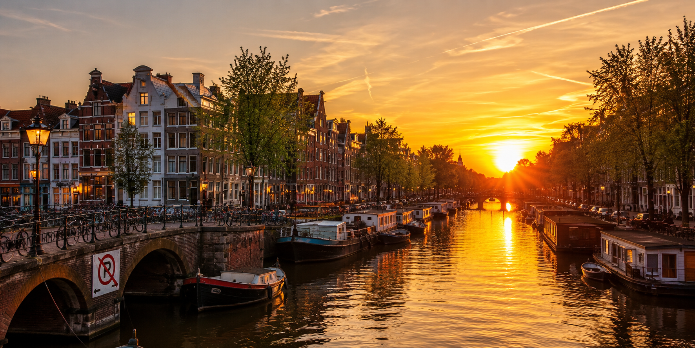
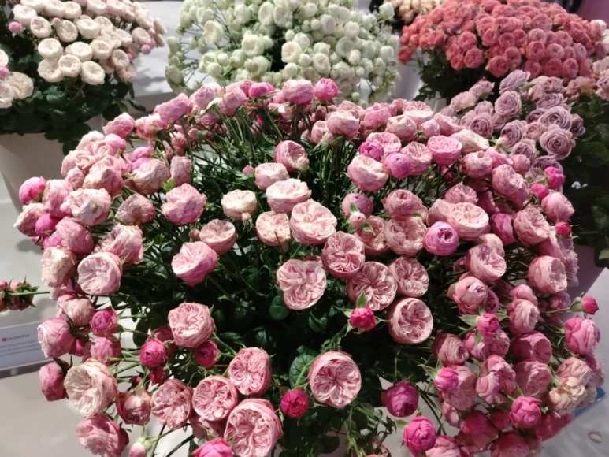
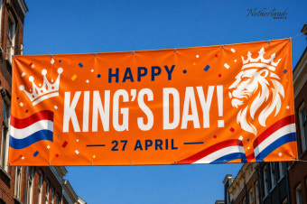

Netherlands(네덜란드)
| 인구 | 1790만명 | 종교 | 가톨릭, 개신교 |
|---|---|---|---|
| 언어 | 네덜란드어 | 면적 | 41,865km2 |
| 화폐 | 유로(€) | 국화 | 튤립 |

쾨켄호프 튤립 축제
쾨켄호프 튤립축제는 매년 수작업으로 심은 700만 개의 구근이 봄이 되어 일제히 피어나는 진풍경을 볼 수 있는 축제입니다. 튤립 뿐 아니라 히아신스, 수선화 등 다양한 봄꽃들을 볼 수 있습니다. 주로 3월 중순에서 5월 중순까지 열리며 튤립이 피는 4월이 특히 아름답습니다.
킹스데이
킹스데이는 국왕 생일을 기념하는 날로, 도시가 프리마켓과 주황색 테마 행사로 활기차게 변하는 문화 축제입니다. 또한 거리 퍼레이드와 라이브 음악, 댄스 파티, 보트 퍼레이드 등 다양한 즐길 거리가 있습니다.
